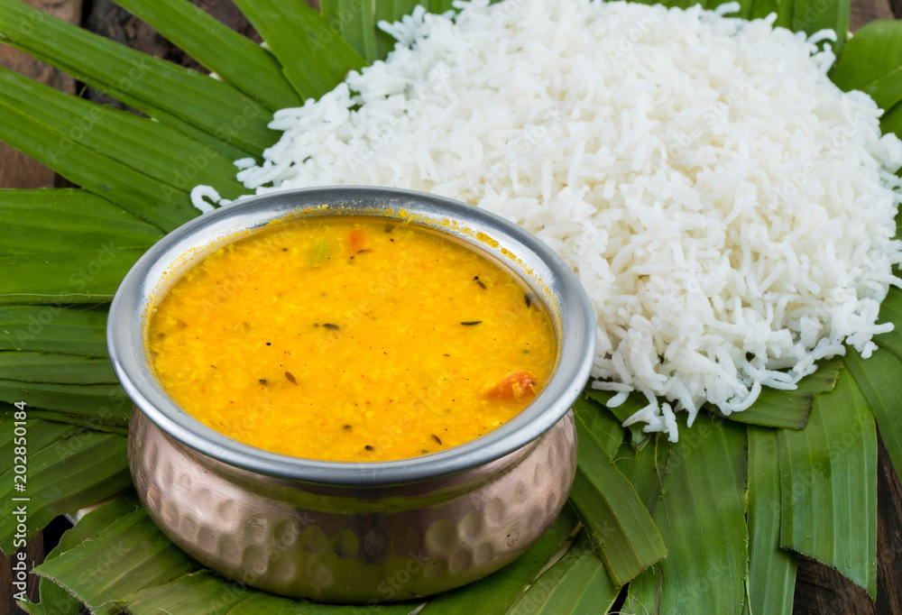
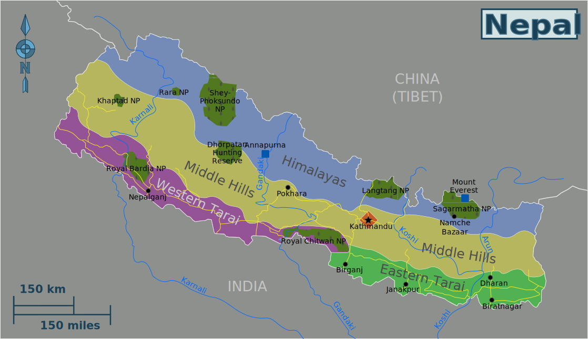
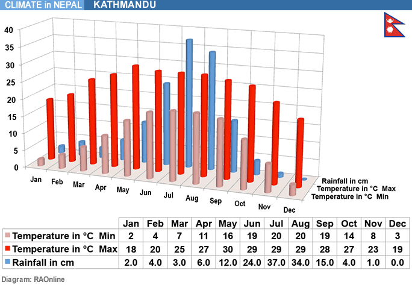

Rice-Daal
Home
Rice and Daal

National food of Nepal
Rice and daal has been the fodder for nepalese for more than a millenium. Nepal's geographical structure makes it very compatible with growing rice and daal, as the country is rich in water resources and has relatively stable weather.


Rice especially is easy to grow and has great connections to the entirety of asia. It also has good amount of calories and carbohydrates, making it perfect for fodder food.
The recipe is easy and simple to follow. Rice especially doesn't require any condiments.
Steps for Rice, 4 servings.
- Add 2 cups of rice in the pressure cooker.
- Pour tap water in the pressure cooker.
- Use your hands or a ladle to swish and swirl the rice and water. After which pour the water out slowly, make sure the rice doesn't spill along.
- Repeat the process for 2-3 times.
- After the water is poured for the final time, it doesn't have to be bone dry. Pour in good drinking water until there is an inch of water above the rice.
- Close the lid of the pressure cooker and lock it, after which put it on a burning stove. Set the heat to a medium.
- It may take around 10-15 mins, but as long as the whistle of the pressure cooker blows, turn off the stove. And let it be for about 5 minutes.
- Make sure the pressure settles, otherwise it will be difficult and dangerous to remove.
- Your rice is cooked.
Steps for Daal, 4 servings.
- Add a quarter of a cups worth of daal in a smaller pressure cooker.
- Pour tap water in the pressure cooker.
- Use your hands or a ladle to swish and swirl the daal and water. After which pour the water out slowly, make sure the daal doesn't spill along.
- Repeat the process for 2-3 times.
- After the water is poured for the final time, it doesn't have to be bone dry. Pour in 5 cups of water.
- Put 2 spoon of Salt, 2 spoon of Cumin, half a spoon of Chilli, 1/4th of Turmeric.
- Add either a teaspoon of oil or a tablespoon of butter or half a tablespoon of ghee.
- Close the lid, and put in on a burning stove. Set the heat to a medium.
- Let the pressure cooker blow its whistle 5 times consecutively, then turn off the stove and let it be for 5 minutes.
- Make sure the pressure settles, otherwise it will be difficult and dangerous to remove.
- Your daal is cooked.